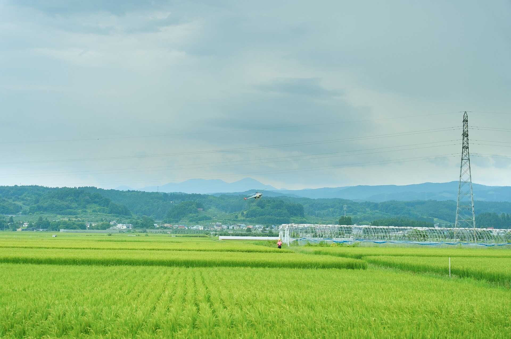
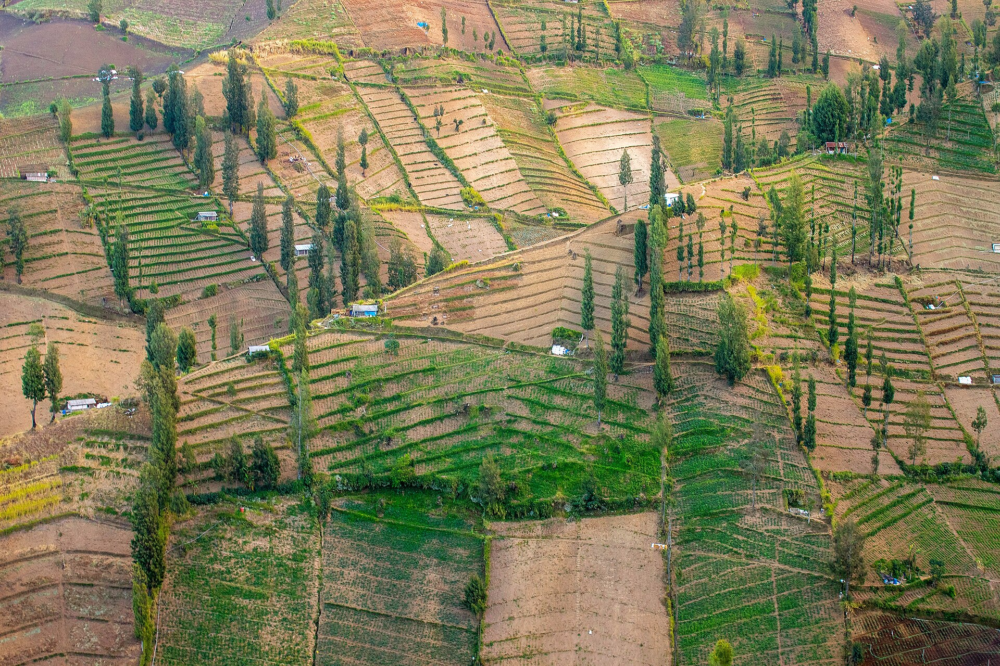

Pratinjau Langsung
live/drone1

Menunggu sinyal drone…
Kirim RTMP dari DJI Fly ke alamat di bawah.LIVE
Drone Live Engine menerima siaran RTMP langsung dari DJI Fly, merekam MP4 tahan korup, dan meneruskannya ke YouTube, Facebook, OBS, HP kru, dan Smart TV. Semua dari jaringan lokal tanpa cloud.
live/drone1

Menunggu sinyal drone…
Kirim RTMP dari DJI Fly ke alamat di bawah.Gunakan tautan sesuai perangkat tujuan.
Rekaman memakai fragmen MP4, tetap aman walau drone terputus.
Aktifkan bila vMix atau OBS tidak bisa membuka RTSP. Memakai CPU dan RAM tambahan.
Lalu pilih kamera Drone Live Engine di OBS, vMix, Meet, atau Zoom.
Nyalakan untuk mengontrol siaran dari HP di Wi-Fi yang sama. Panel tetap tertutup selama tombol ini mati.
Dirancang untuk pilot drone di lapangan. Tanpa konfigurasi router rumit atau cloud berbayar.
Buka aplikasi Drone Live Engine di laptop. Alamat RTMP otomatis terdeteksi mengikuti jaringan Wi-Fi atau hotspot Anda.
rtmp://10.220.99.210:1935/live/drone1
Buka menu Live Streaming pada aplikasi DJI Fly di remote atau HP drone, tempel alamat RTMP, lalu mulai transmisi.
Tekan Mulai Rekam untuk arsip MP4 tahan korup, serta aktifkan restream otomatis ke YouTube & Facebook bersamaan.
Kru dapat menonton langsung dari browser HP via kode pairing 6 angka, atau relay langsung ke OBS & Zoom lewat webcam virtual.
Dari pesta pernikahan megah hingga misi pencarian SAR darurat, Drone Live Engine bekerja tanpa bergantung pada koneksi internet.
Sering kali kabel HDMI dari drone ke switcher panggung sangat merepotkan dan berbahaya. Dengan Drone Live Engine, drone menyiarkan langsung lewat Wi-Fi gedung ke laptop switcher Anda. Video langsung masuk ke vMix atau ATEM Mini via RTSP dalam hitungan milidetik.
Drone Live Engine bertindak sebagai hub transmisi video lokal super cepat, membagi satu siaran drone ke seluruh format industri.
Masukan dari remote DJI Fly port 1935.
rtmp://10.220.99.210:1935/live/drone1
MediaMTX + FFmpeg Ultra-Low Latency Pipeline. Pemrosesan paralel tanpa re-encoding boros daya.
http://10.220.99.210:8889/live/drone1/
rtsp://10.220.99.210:8554/live/drone1
http://10.220.99.210:8888/live/drone1/index.m3u8
Lihat perbandingan kecepatan transmisi antar protokol siaran dari laptop yang sama di Wi-Fi yang sama.

Cek kompatibilitas model drone Anda dan lihat konfigurasi transmisi yang direkomendasikan.
Setiap fitur diciptakan untuk menjawab kendala nyata saat siaran drone di lokasi terbuka.
Sinyal drone terputus dua detik di balik bukit atau gedung? Peringatan tampil di bawah 1 detik, video langsung tersambung otomatis saat sinyal kembali tanpa beku panjang.
Siarkan ke YouTube Live dan Facebook secara simultan. Restream otomatis standby menunggu drone dan langsung on-air seketika gambar pertama masuk.
Kamera bernama "Drone Live Engine" langsung terdaftar di sistem Windows. Bisa langsung dipilih sebagai webcam di OBS, vMix, Zoom, dan Google Meet.
Menggunakan format fragmented MP4 (fMP4). Jika kabel laptop tersenggol atau baterai mati mendadak di lapangan, file rekaman tetap utuh dan dapat diputar sempurna.
Kru di lapangan tak perlu install aplikasi apa pun. Cukup sambungkan HP ke Wi-Fi laptop, buka browser, dan masukkan kode pairing 6 angka yang berlaku 5 menit.
Windows Defender sering kali menahan koneksi inbound port 1935. Drone Live Engine memiliki fitur diagnostik terintegrasi untuk memperbaiki rule firewall secara instan.
Solusi yang terbukti di lapangan untuk live streaming drone bebas stres.
"Kemarin siaran drone di gedung pernikahan langsung masuk ke switcher vMix tanpa kabel HDMI panjang. Tamu terpukau karena siaran di LED Wall sama sekali tidak ada delay!"
"Di tengah pegunungan tidak ada sinyal seluler sama sekali. Kami nyalakan hotspot dari laptop, drone langsung broadcast ke 4 HP anggota tim SAR di tenda posko."
"Latensi WebRTC di bawah 1 detik benar-benar penyelamat. Pit stop crew bisa memantau manuver drone di lintasan balap tanpa lag menjengkelkan."
Semua hal yang perlu Anda ketahui mengenai lisensi, koneksi jaringan, dan kompatibilitas perangkat.
Sama sekali tidak. Semua fitur terbuka sejak instalasi pertama: perekaman tak terbatas, restreaming ke YouTube & Facebook, kamera virtual DirectShow, hingga akses monitoring HP. Berlisensi MIT, bebas digunakan untuk pekerjaan komersial berbayar.
Itu adalah proteksi standar Microsoft SmartScreen untuk software open-source baru yang belum memiliki sertifikat berbayar dari Microsoft. Cukup klik More info → Run anyway. Aplikasi 100% bebas malware dan aman.
Tiga penyebab paling sering: siaran di DJI Fly belum dipencet mulai, penulisan alamat RTMP tidak persis sama, atau firewall memblokir port 1935. Cukup buka menu Diagnostik → Perbaiki Firewall di panel aplikasi.
Wi-Fi kantor, kafe, atau hotel sering mengaktifkan fitur client isolation (perangkat tidak diizinkan saling menghubungi). Solusi terbaik: nyalakan personal hotspot dari HP atau remote controller drone, lalu sambungkan laptop ke hotspot tersebut.
Bisa! Drone pertama mengirim ke live/drone1 dan drone kedua ke live/drone2. Di panel laptop, kedua kamera akan muncul sebagai tab pilihan yang dapat dipantau dan direkam secara fleksibel.
Drone Live Engine bekerja tanpa perlu mengatur scene rumit: RTMP masuk langsung terekam fMP4 anti-rusak dan siap di-restream otomatis. OBS tetap dapat digunakan berdampingan lewat feed RTSP atau input kamera virtual.
Tentu bisa. Aktifkan fitur Kamera Virtual di panel, lalu di menu pengaturan video Zoom atau Google Meet pilih kamera bernama Drone Live Engine.
Unduh sekarang dan rasakan transmisi drone tanpa hambatan cloud. Paket instalasi telah mencakup Drone Live Engine, MediaMTX engine, FFmpeg passthrough, dan driver kamera virtual.